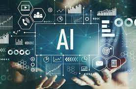

.jpg)
What is Artificial Intelligence (AI)?
Artificial intelligence (AI) is a wide-ranging branch of computer science concerned
Go somewhere

.jpg)

What is Artificial Intelligence (AI)?
Understanding Artificial Intelligence (AI)
HISTORY OF AI
| Date | Description |
|---|---|
| 1943 | Warren McCullough and Walter Pitts publish "A Logical Calculus of Ideas Immanent in Nervous Activity." The paper proposed the first mathematic model for building a neural network. |
| 1949 | In his book The Organization of Behavior: A Neuropsychological Theory, Donald Hebb proposes the theory that neural pathways are created from experiences and that connections between neurons become stronger the more frequently they're used. Hebbian learning continues to be an important model in AI. |
| 1950 | Alan Turing publishes "Computing Machinery and Intelligence, proposing what is now known as the Turing Test, a method for determining if a machine is intelligent. Harvard undergraduates Marvin Minsky and Dean Edmonds build SNARC, the first neural network computer. Claude Shannon publishes the paper "Programming a Computer for Playing Chess." Isaac Asimov publishes the "Three Laws of Robotics. |
| 1952 | Arthur Samuel develops a self-learning program to play checkers |
| 1954 | The Georgetown-IBM machine translation experiment automatically translates 60 carefully selected Russian sentences into English. |
| 1956 | The phrase artificial intelligence is coined at the "Dartmouth Summer Research Project on Artificial Intelligence." Led by John McCarthy, the conference, which defined the scope and goals of AI, is widely considered to be the birth of artificial intelligence as we know it today. Allen Newell and Herbert Simon demonstrate Logic Theorist (LT), the first reasoning program |
| 1997 | IBM's Deep Blue beats world chess champion Gary Kasparov |
| 2005 | STANLEY, a self-driving car, wins the DARPA Grand Challenge. The U.S. military begins investing in autonomous robots like Boston Dynamic's "Big Dog" and iRobot's "PackBot." |
| 2012 | Andrew Ng, founder of the Google Brain Deep Learning project, feeds a neural network using deep learning algorithms 10 million YouTube videos as a training set. The neural network learned to recognize a cat without being told what a cat is, ushering in breakthrough era for neural networks and deep learning funding. |
| 2014 | Google makes first self-driving car to pass a state driving test |
| 2016 | Google DeepMind's AlphaGo defeats world champion Go player Lee Sedol. The complexity of the ancient Chinese game was seen as a major hurdle to clear in AI. |
Artificial intelligence (AI) is a wide-ranging branch of computer science concerned
Go somewhere